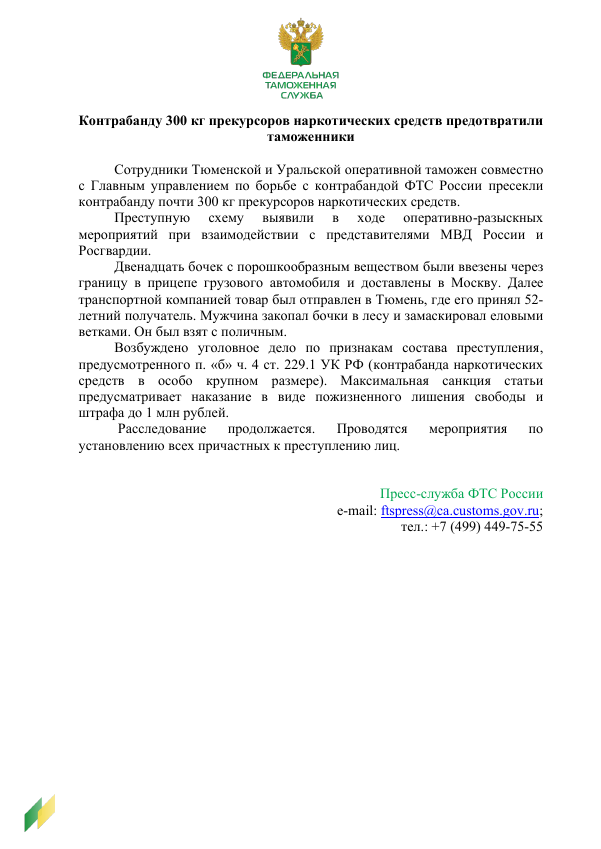
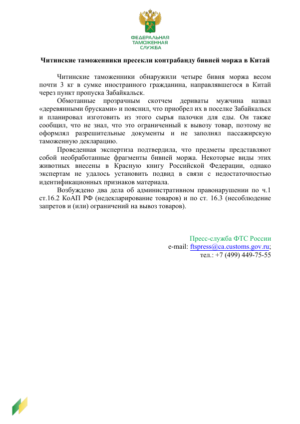
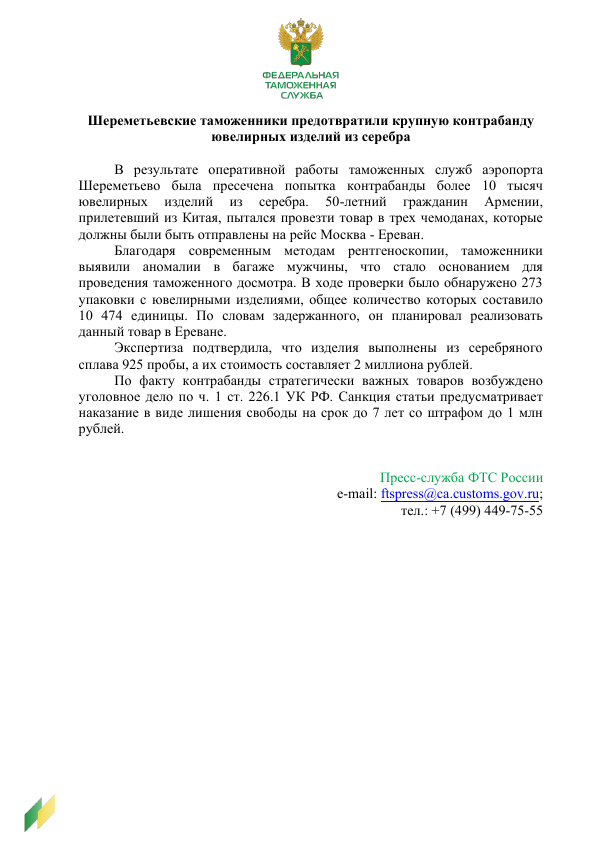
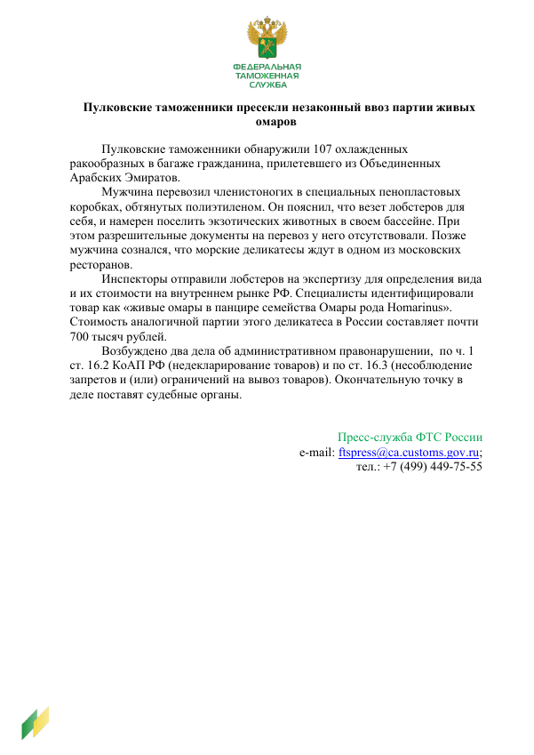

Пресечена контрабанда прекурсоров наркотиков
Изъято почти 300 кг прекурсоров наркотических средств.
Читать пресс-релизЯ работаю в сфере связей с общественностью и телевизионного производства.
У меня есть опыт в государственных коммуникациях, на телевидении и в фотографии. Рассматриваю предложения о работе в PR, социальных сетях и цифровом маркетинге.
Пресс-релизы и опыт организации пресс-туров.
Фотографии и короткие видео о путешествиях, языках и повседневной жизни.
Телевизионные проекты, документальные фильмы, интервью и фотогалерея.
Мой опыт в PR включает написание пресс-релизов, работу с запросами СМИ, подготовку материалов для интервью, а также организацию пресс-конференций и пресс-туров.
Примеры текстов для Федеральной таможенной службы России.

Изъято почти 300 кг прекурсоров наркотических средств.
Читать пресс-релиз
В багаже пассажира обнаружены четыре бивня моржа.
Читать пресс-релиз
В Шереметьево обнаружено более 10 тысяч изделий.
Читать пресс-релиз
В Пулково задержана партия из 107 омаров.
Читать пресс-релизЯ работала на телевидении ассистентом оператора, редактором и линейным продюсером. Занималась поиском информации, подготовкой сценариев и подбором съёмочных локаций.
Проект о создании реалити-шоу в России, включающий интервью с известной телеведущей Марией Третьяковой.
Тревел-проект о Москве.
Документальный фильм о физике Александре Столетове.
Посмотрите галерею. Нажмите на фотографию, чтобы открыть её целиком.
Загрузка фотографий…
Я Анна Кит, специалист по PR и маркетингу. У меня есть опыт в государственных коммуникациях и телевизионном производстве в России.
Я начинала на телевидении: участвовала в съёмках, работала над сценариями и планированием производства. В PR я занималась пресс-релизами, контентом для соцсетей, подготовкой материалов для интервью и мероприятиями для СМИ.
Я окончила МГУ имени М. В. Ломоносова по направлению «Телевидение» с отличием. Помимо работы с текстами, мне нравится создавать визуальный контент: снимать видео, фотографировать и монтировать.
Ищу работу, где смогу применить опыт в коммуникациях и производстве контента — прежде всего в PR, социальных сетях и цифровом маркетинге.
Русский и английский
ОПЫТ РАБОТЫ
Государственная Дума Российской Федерации
С 2024 года · Москва, Россия
ВГТРК; «Культура»; «Известия»; «Красный квадрат»; «М-Продакшн»; Russia Today; Первый канал
2021–2024 · Москва, Россия
ОБРАЗОВАНИЕ
МГУ имени М. В. Ломоносова
2024–2027 · Второе высшее образование, очно-заочная форма
МГУ имени М. В. Ломоносова
2020–2024 · Диплом с отличием
Повышение квалификации по клиентоцентричности
Дополнительное обучение: маркетинг
НАВЫКИ И ИНСТРУМЕНТЫ
Написание и редактирование текстов · Подготовка интервью · Фотография · Видеопроизводство · Adobe Premiere Pro · Adobe Photoshop
По вопросам работы и проектов в PR, социальных сетях и цифровом маркетинге напишите мне по электронной почте или свяжитесь со мной в LinkedIn.
Соцсети и контент
Путешествия, языки и повседневная жизнь в моём блоге в Instagram.
В Instagram
@iamannakit_ ↗ (откроется в новой вкладке)